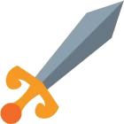
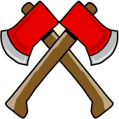
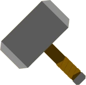
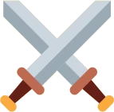
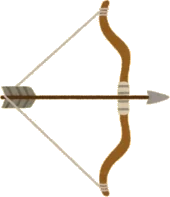
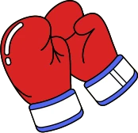
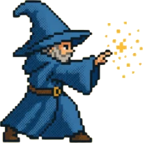
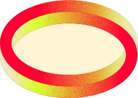
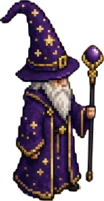

Sucessos Críticos
Se estiver usando a tabela, quando alguém rolar um 20 natural para fazer um ataque, antes de calcular o dano, ele deve rolar mais 1d100 e usar a tabela correspondente. Se estiver usando o baralho, saque uma carta do baralho de sucessos críticos e aplique os efeitos. A tabela e a carta possuem três efeitos diferentes. Para saber qual efeito aplicar, verifique que tipo de dano o personagem atacante está causando — perfuração, corte ou impacto — e aplique o efeito conforme o símbolo representado.
Falhas Críticas
Se estiver usando a tabela, quando alguém rolar um 1 natural para fazer um ataque, além de errar o ataque, ele deve rolar mais 1d100 e usar a tabela correspondente. Se estiver usando o baralho, saque uma carta do baralho de falhas críticas e aplique os efeitos. A tabela e a carta possuem três efeitos diferentes. Para saber qual efeito aplicar, verifique que tipo de ataque o personagem atacante está fazendo — corpo a corpo, à distância ou desarmado — e aplique o efeito conforme o símbolo representado.

Perfuração: se o atacante causa dano perfurante, aplique o efeito descrito com este símbolo.
Corte: se o atacante causa dano cortante, aplique o efeito descrito com este símbolo.
Impacto: se o atacante causa dano contundente, aplique o efeito descrito com este símbolo.
Corpo a Corpo: se o atacante fez um ataque corpo a corpo, aplique o efeito descrito com este símbolo.
À Distância: se o atacante fez um ataque à distância, aplique o efeito descrito com este símbolo.
Desarmado: se o atacante fez um ataque desarmado, aplique o efeito descrito com este símbolo.| d100 | Perfurante | Cortante | Contundente |
|---|---|---|---|
| 01–05 | Golpe Preciso: adicione um dado de dano no valor máximo. | Golpe Rasgador: adicione um dado de dano no valor máximo. | Impacto Devastador: adicione um dado de dano no valor máximo. |
| 06–10 | Perfurar o Coração: alvo testa Constituição (CD 15) ou recebe dano adicional de 10% da vida atual. | Ferida Exposta: +1d10 de dano cortante no próximo turno. | Fratura Grave: alvo ganha 1 nível de exaustão. |
| 11–15 | Sangramento Interno: perde 2d6 PV/turno até ser estabilizado. | Corte nos Tendões: velocidade reduzida a 0. | Concussão Violenta: teste de Constituição (CD 15) ou fica atordoado. |
| 16–20 | Fenda Arterial: desvantagem em testes de Constituição. | Corte na Articulação: desvantagem em ataques corpo a corpo. | Ossos Estilhaçados: -2 nos ataques. |
| 21–25 | Atravessado: movimento reduzido a 0 até o final do próximo turno. | Membro Dilacerado: desarme ou desvantagem em testes de Força. | Desarme Brutal: alvo solta o objeto que segura (Força CD 15). |
| 26–30 | Ponto Vital Atingido: dano crítico máximo. | Hemorragia Intensa: 2d6 de dano/turno até estabilizar. | Empurrão Brutal: alvo empurrado 3 metros. |
| 31–35 | Derrubar Arma: desarme automático. | Corte de Precisão: ignora resistência/imunidade a cortante. | Tontura: desvantagem em testes de Inteligência e Sabedoria. |
| 36–40 | Paralisia Parcial: teste de Constituição (CD 15) ou perde uma ação. | Derrubado pelo Corte: alvo testa Destreza (CD 15) ou cai caído. | Impacto no Joelho: deslocamento reduzido pela metade. |
| 41–45 | Arremesso Doloroso: empurrado 1,5m e cai caído. | Rasgo Vascular: sem cura mágica até o próximo turno. | Choque de Corpo: desvantagem em testes de Constituição. |
| 46–50 | Golpe Cirúrgico: ignora resistência a perfurante. | Lâmina Impiedosa: dano crítico máximo. | Golpe Certeiro: dano crítico máximo. |
| 51–55 | Enfiada Certeira: ataque extra contra o mesmo alvo. | Chuva de Sangue: ataque extra em inimigo adjacente. | Esmagamento Parcial: dano extra igual a metade da vida atual do alvo (máx. +50). |
| 56–60 | Torpor: alvo não pode usar reação até o final do próximo turno. | Dilaceração Brutal: CA do alvo -2 até ser curado. | Golpe Estonteante: alvo não pode usar reação. |
| 61–65 | Músculo Perfurado: alvo com -2 em ataques. | Ataque Fluido: mova metade do deslocamento sem provocar ataque de oportunidade. | Crack!: alvo cai caído. |
| 66–70 | Espetada Mortal: ignora cobertura de até 3/4. | Perfuração Crítica: sangramento severo (3d4/turno). | Quebra-Costelas: -2 na CA do alvo. |
| 71–75 | Ferida Dolorosa: desvantagem em resistências até o próximo turno. | Corte Debilitante: desvantagem em testes de Constituição/Força. | Impacto Brutal: triplo de dano, ou teste de Constituição (CD 15) — na falha, inconsciente por 1 turno. |
| 76–80 | Perfuração Tripla: duplique o dano crítico. | Fratura Exposta: desvantagem em Atletismo e Acrobacia. | Golpe Secundário: ataque extra contra o mesmo alvo. |
| 81–85 | Golpe Ofensivo: vantagem no próximo ataque contra o mesmo alvo. | Arrancada de Carne: -2 em ataques e testes de Força/Constituição. | Esmagamento Implacável: empurra 1,5m e derruba caído. |
| 86–90 | Sangramento Maciço: 3d4 de dano por turno até curado. | Fúria Implacável: vantagem no próximo ataque. | Fratura Interna: perde 1d6 PV por turno até ser curado. |
| 91–95 | Corte na Garganta: corta as cordas vocais do alvo — ele não fala até o próximo descanso longo. | Mutilação: perda do uso de um membro até ser curado. | Arremesso Violento: lançado 3 metros (teste de Destreza CD 15). |
| 96–100 | Fim Brutal: o alvo cai a 0 de vida com uma falha automática no teste de morte. | Decapitação Lendária: o alvo cai a 0 de vida com uma falha automática no teste de morte. | Esmagamento Fatal: o alvo cai a 0 de vida com uma falha automática no teste de morte. |
| d100 | Corpo a Corpo | À Distância | Desarmado |
|---|---|---|---|
| 01–05 | Golpe no Ar: fica caído até o próximo turno. | Flecha Errada: o projétil acerta um aliado. | Golpe no Ar: fica caído até o próximo turno. |
| 06–10 | Golpe Errado: atinge um aliado (1d4 de dano, Destreza CD 12 pra evitar). | Flecha Perdida: o projétil acerta um aliado e ricocheteia de volta em você. | Punho Atordoado: sofre 1d4 de dano. |
| 11–15 | Desarme: a arma cai 3 metros longe. Perde o ataque e usa a próxima ação pra pegá-la. | Descontrole de Arco: você lança o arco no oponente. | Tornozelo Torcido: perde todo o deslocamento. |
| 16–20 | Golpe ao Inimigo Errado: ataca um aliado, quebrando a armadura dele (-1 CA). | Golpe ao Inimigo Errado: ataca um aliado. Dano reduzido pela metade (Destreza CD 12). | Descontrole de Movimento: desvantagem no próximo ataque. |
| 21–25 | Golpe Fraco: perde o ataque e sofre 1d4 de dano. | Arco Travado: perde a ação pra liberar a corda do arco. | Golpe Errado: sua mão dói — perde o ataque e sofre 1d6 de dano. |
| 26–30 | Erro de Posição: derruba um aliado. | Flecha Quebrada: perde uma flecha e tem desvantagem no próximo ataque. | Joelho Torcido: sofre 1d10 de dano e desvantagem nos testes de movimento. |
| 31–35 | Golpe Desviado: o próximo inimigo tem vantagem pra te atacar. | Flecha Enganchada: perde o ataque e gasta a próxima ação pra desengatar. | Erro de Movimento: recebe ataque de oportunidade de inimigos a até 1,5 metro. |
| 36–40 | Deslocamento Ruim: tropeça e anda 4 metros em linha reta. | Desviante de Munição: o próximo inimigo tem vantagem pra te atacar. | Golpe Falhado: gasta todo o movimento e fica vulnerável. |
| 41–45 | Golpe Falhado: perde o ataque e sua arma cai 3 metros longe. | Espaço Inadequado: perde a flecha e a ação procurando ela. | Desequilíbrio Total: fica em desvantagem até o próximo turno. |
| 46–50 | Golpe Inútil: fica vulnerável até o próximo turno. | Flecha Descontrolada: atinge você mesmo (1d6 de dano). | Golpe Deslocado: não pode atacar no próximo turno. |
| 51–55 | Soco Fraco: a arma escorrega — perde o ataque e sofre 1d6 de dano. | Arco Tenso: fica com -2 no próximo ataque. | Golpe Falhado: sofre 2d10 de dano e fica com desvantagem no próximo ataque. |
| 56–60 | Golpe Frustrado: o próximo inimigo tem vantagem pra te atacar. | Flecha Explosiva: causa 1d6 de dano em você e inimigos adjacentes. | Falta de Controle: fica inconsciente até ser acordado. |
| 61–65 | Falta de Precisão: fica com desvantagem no próximo ataque. | Flecha Desviada: o alvo lança a flecha de volta pra você. | Rompimento Muscular: -2 de CA até o descanso longo. |
| 66–70 | Postura Ruim: fica vulnerável. O próximo inimigo tem vantagem. | Aljava Furada: você perde 2d10 de projéteis. | Golpe Errado: perde a ação e o próximo inimigo tem vantagem pra te atacar. |
| 71–75 | Material Ruim: sua arma quebra. | Golpe Mal Posicionado: o arco quebra. | Câimbra: -2 pra acertar no próximo turno. |
| 76–80 | Golpe Vulnerável: desmoraliza seus aliados (resistência de Sabedoria CD 12) — na falha, ficam com desvantagem no próximo turno. | Corda do Arco Rígida: a corda bate no seu rosto causando 2d12 de dano. | Golpe Vulnerável: desmoraliza seus aliados (resistência de Sabedoria CD 12) — na falha, ficam com desvantagem no próximo turno. |
| 81–85 | Perda de Força: perde o ataque e sofre 1d10 de dano. | Brisa Mortal: um cisco entra no seu olho — -2 pra acertar até tirá-lo com 1 ação. | Golpe no Ar Quebrado: derruba um aliado. |
| 86–90 | Golpe Errado: recebe ataque de oportunidade de inimigos próximos. | Arco Pesado: você cai. | Falta de Força: você recebe todos os ataques até o próximo turno. |
| 91–95 | Golpe Descontrolado: o próximo inimigo te acerta automaticamente. | Golpe Errado: você acerta um aliado e o derruba. | Impacto Fatal: sofre 2d12 de dano e cai no chão. |
| 96–100 | Erro Total: você perde 50% da sua vida atual (mínimo 1 PV). | Erro Fatal: a flecha se quebra e os estilhaços entram no seu olho — fica cego até receber cura. | Golpe Total: você quebra os dedos e fica sem ação bônus até o descanso longo. |
Tabela / Baralho de
Sucessos Críticos
Se estiver usando a tabela, quando alguém rolar um 20 natural para fazer um ataque, antes de calcular o dano, ele deve rolar mais 1d10 e usar a tabela correspondente. Se estiver usando o baralho, saque uma carta do baralho de sucessos críticos e aplique os efeitos. A tabela e a carta possuem três efeitos diferentes. Para saber qual efeito aplicar, verifique a escola da magia que foi conjurada.
Tabela / Baralho de
Falhas Críticas
Se estiver usando a tabela, quando alguém rolar um 1 natural para fazer um ataque, além de errar o ataque, ele deve rolar mais 1d10 e usar a tabela correspondente. Se estiver usando o baralho, saque uma carta do baralho de falhas críticas e aplique os efeitos. A tabela e a carta possuem três efeitos diferentes. Para saber qual efeito aplicar, verifique a escola da magia que foi conjurada.
- Magias de Abjuração são protetoras em sua natureza, embora algumas tenham grande uso agressivo. Elas criam barreiras mágicas, negam efeitos nocivos, ferem invasores ou banem criaturas para outros planos de existência.
- Magias de Adivinhação revelam informações, na forma de segredos há muito esquecidos, vislumbres do futuro, a localização de coisas escondidas, a verdade por trás das ilusões ou a visão de distantes lugares ou pessoa.
- Magias de Conjuração envolvem a transposição de objetos ou criaturas de um local para o outro. Algumas magias invocam criaturas ou objetos ao lado do conjurador, enquanto outras permitem ao conjurador se teletransportar para outro lugar. Algumas conjurações criam objetos ou efeitos a partir do nada.
- Magias de Encantamento afetam a mente de outros, influenciando ou controlando seu comportamento. Tais magias podem fazer o inimigo ver você como amigo, forçar criaturas a tomar um rumo de ação ou mesmo controlar outra pessoa como uma marionete.
- Magias de Evocação manipulam as energias mágicas para produzir um efeito desejado. Algumas evocam explosões de raio e fogo, outras canalizam energia positiva para curar ferimentos.
- Magias de Ilusão enganam os sentidos ou a mente de outros. Elas fazem com que as pessoas vejam coisas que não estão ali, como também não notar coisas que estão ali, escutar sons fantasmagóricos ou lembrar de coisas que nunca aconteceram. Algumas ilusões criam imagens fantasmagóricas que qualquer criatura pode ver, mas as mais traiçoeiras ilusões plantam uma imagem diretamente na mente da criatura.
- Magias de Necromancia podem manipular a energia da vida e da morte. Tais magias podem garantir uma reserva extra de força de vida, drenar a energia vital de outra criatura, criar um morto-vivo ou mesmo trazer um morto de volta à vida. Criar mortos-vivos através do uso de magias necromânticas como animar mortos, não é um bom ato e apenas alguém maligno faz uso de tais magias com frequência.
- Magias de Transmutação mudam a propriedade de uma criatura, objeto ou ambiente. Elas podem tornar um inimigo em uma criatura inofensiva, reforçar a força de um aliado, fazer um objeto se mover ao comando do conjurador ou melhorar a capacidade inata de cura de uma criatura, para que ela se recupere rapidamente da injúria.
1. Abjuração (Proteção e Repulsão)
| d10 | Efeito |
|---|---|
| 1–3 | Retaliação Reativa: Você ganha +2 na CA até o início do seu próximo turno. |
| 4–6 | Desarmonia Protetiva: Qualquer bônus mágico de armadura, cobertura mágica ou efeito como Escudo Arcano no alvo é dissipado imediatamente. |
| 7–8 | Choque de Repulsão: O alvo é empurrado 4,5 metros em linha reta para longe de você e sofre a condição Caído. |
| 9 | Escudo Refletor: Até o início do seu próximo turno, o próximo ataque à distância direcionado a você erra automaticamente e reflete de volta ao atacante. |
| 10 | Banimento Momentâneo: O alvo desaparece em uma fissura extradimensional por 1 rodada completa (não age, não pode ser alvejado e reaparece no mesmo ponto no início do seu próximo turno). |
| d10 | Efeito |
|---|---|
| 1–3 | Fragilidade Defensiva: Sua CA sofre uma penalidade de -2 até o início do seu próximo turno. |
| 4–6 | Ruptura de Barreira: Se você estiver mantendo concentração em magias defensivas, ela cai instantaneamente. |
| 7–8 | Recuo de Força: Uma onda de choque atinge você: você é arremessado 3 metros para trás e cai no chão (Caído). |
| 9 | Atração Hostil: Até o fim da rodada, todos os ataques de oportunidade contra você têm Vantagem. |
| 10 | Aprisionamento Inverso: Uma cúpula de força o paralisa: você fica Impedido até o final do seu próximo turno. |

↑ Escolas2. Adivinhação (Tempo, Sentidos e Informação)
| d10 | Efeito |
|---|---|
| 1–3 | Antevisão Tática: Você descobre imediatamente a CA exata e os pontos de vida atuais do alvo. |
| 4–6 | Ponto Fraco Revelado: O próximo ataque feito por você ou um aliado contra o alvo ganha Vantagem e ignora qualquer Resistência. |
| 7–8 | Paralaxe Temporal: O alvo perde a Reação dele até o final da rodada atual e rola iniciativa novamente com -5 para a próxima rodada. |
| 9 | Destino Amarrado: O alvo sofre Desvantagem em todas as salvaguardas até o fim do seu próximo turno. |
| 10 | Presciência Absoluta: O alvo falha automaticamente na sua próxima jogada de ataque ou teste resistido contra você dentro de 1 minuto. |
| d10 | Efeito |
|---|---|
| 1–3 | Cegueira Temporária: Flashes visuais sobrecarregam sua retina; você fica Cego até o fim do seu turno atual. |
| 4–6 | Desorientação Temporal: Você sofre Desvantagem em jogadas de ataque e testes de Percepção por 1 rodada. |
| 7–8 | Eco Falso: Você gasta sua Reação imediatamente sem realizar nada, reagindo a um futuro que não existe. |
| 9 | Leitura Aberrante: Uma visão traumatizante de planos distantes inflige a você 2d6 de dano psíquico. |
| 10 | Catatonia Sensorial: Seus sentidos congelam no tempo; você fica Atordoado até o início do seu próximo turno. |
3. Conjuração (Teleporte, Criação e Planos)
| d10 | Efeito |
|---|---|
| 1–3 | Ancoragem Gravitacional: O alvo fica Impedido por cordas astrais ou matéria invocada até o final do próximo turno dele. |
| 4–6 | Salto Espacial: Imediatamente após o impacto da magia, você se teletransporta até 9 metros para um espaço desocupado que possa ver. |
| 7–8 | Vórtice Planar: O alvo é teletransportado 4,5 metros em uma direção à sua escolha para um local seguro no solo. |
| 9 | Entidade Espelhada: Um clone etéreo instável surge adjacente ao alvo, realiza um ataque de oportunidade contra ele e se dissipa. |
| 10 | Fenda do Caos: Uma fenda suga a gravidade ao redor do alvo: o alvo e todas as criaturas a até 3 metros sofrem 3d6 de dano de Força adicional e caem no chão. |
| d10 | Efeito |
|---|---|
| 1–3 | Gagueira Espacial: Seu deslocamento é reduzido a 0 até o final do seu próximo turno. |
| 4–6 | Troca Indesejada: Você é teletransportado 3 metros em uma direção aleatória (role 1d8 para direção). Se houver um obstáculo, você sofre 1d6 de dano de Concussão. |
| 7–8 | Resíduo Planar: Uma poça viscosa surge sob seus pés; o piso em um raio de 3 metros ao seu redor se torna terreno difícil por 1 minuto. |
| 9 | Invocação Acidental: Um ser hostil menor (como um Mephit ou Diabrete) surge a até 3 metros de você e age imediatamente contra o seu grupo. |
| 10 | Implosão Localizada: A magia colapsa no seu ponto de conjuração: você e criaturas adjacentes sofrem 2d8 de dano de Força. |
4. Encantamento (Mente, Vontade e Emoções)
| d10 | Efeito |
|---|---|
| 1–3 | Hesitação Mental: O alvo não pode usar Reações até o final do seu próximo turno. |
| 4–6 | Abalo Emocional: O alvo fica Amedrontado ou Enfeitiçado por você (à sua escolha) até o final do próximo turno dele. |
| 7–8 | Comando Reflexo: O alvo larga imediatamente o que estiver segurando nas mãos. |
| 9 | Marionete Instantânea: O alvo usa imediatamente a Reação dele para desferir um ataque corpo a corpo contra um aliado dele à sua escolha. |
| 10 | Colapso Sináptico: A mente do alvo desliga; ele fica Incapacitado até o final do próximo turno dele. |
| d10 | Efeito |
|---|---|
| 1–3 | Fadiga Psíquica: Você tem Desvantagem na próxima salvaguarda mental (Inteligência, Sabedoria ou Carisma) que fizer dentro de 1 minuto. |
| 4–6 | Fascinação Reversa: O alvo se torna imune a quaisquer magias de Encantamento conjuradas por você pelas próximas 24 horas. |
| 7–8 | Eco de Vontade: Você é obrigado a se mover todo o seu deslocamento em linha reta para longe do alvo na sua próxima oportunidade de movimento. |
| 9 | Retrocesso Empático: Você fica Enfeitiçado pelo alvo até o final do próximo turno dele. |
| 10 | Sobrecarga Neural: Sua própria mente sofre o ricochete mental: você sofre 2d10 de dano psíquico e fica Atordoado até o início do seu próximo turno. |
5. Evocação (Energia, Elementos e Dano Puro)
| d10 | Efeito |
|---|---|
| 1–3 | Ignição Residual: O alvo queima/congela/eletrocuta: ele sofre 1d6 de dano elemental adicional no início do próximo turno dele. |
| 4–6 | Estouro de Concussão: O alvo é arremessado 3 metros para trás e fica Caído. |
| 7–8 | Zona Instável: O solo em um raio de 3 metros ao redor do alvo queima/congela por 1 rodada; qualquer criatura que entrar ou começar o turno ali sofre 2d6 de dano do mesmo tipo da magia. |
| 9 | Destruição Amplificada: Maximize o dano de todos os dados normais da magia antes de rolar os dados extras de crítico. |
| 10 | Cataclismo Arcano: O alvo ganha Vulnerabilidade ao tipo de dano dessa magia até o final do seu próximo turno (calculada neste próprio ataque). |
| d10 | Efeito |
|---|---|
| 1–3 | Fumaça Ofuscante: Uma explosão de fuligem cega você até o final do seu turno atual. |
| 4–6 | Chama Interna: Você sofre metade do dano base que a magia causaria (rolado com dados normais), do mesmo tipo de energia que tentou evocar. |
| 7–8 | Estouro de Condução: Uma faísca atinge o aliado mais próximo a até 4,5 metros de você, causando 2d6 do dano da magia. |
| 9 | Fissura no Conjurador: Você ganha Vulnerabilidade ao tipo de dano da magia que tentou conjurar até o início do seu próximo turno. |
| 10 | Detonação Espontânea: A magia explode nas suas mãos; você sofre o dano total da magia (como se tivesse falhado na própria salvaguarda) e cai no chão. |
6. Ilusão (Sentidos, Percepção e Realidade Aparente)
| d10 | Efeito |
|---|---|
| 1–3 | Mancha Óptica: O alvo sofre Desvantagem no próximo ataque que realizar contra qualquer criatura. |
| 4–6 | Vulto Defensivo: Duas duplicatas ilusórias surgem ao seu redor, agindo identicamente aos efeitos da magia Reflexos por 1 rodada. |
| 7–8 | Terror Quimérico: O alvo vê seus piores medos materializados e fica Amedrontado até o final do próximo turno dele. |
| 9 | Invisibilidade Reversa: O alvo se torna incapaz de ver você; você é considerado Invisível para ele até o fim do combate ou até atacá-lo novamente. |
| 10 | Delírio Total: O alvo é incapaz de distinguir amigos de inimigos: na próxima rodada, ele ataca aleatoriamente a criatura mais próxima ao alcance dele. |
| d10 | Efeito |
|---|---|
| 1–3 | Glitch Visual: O alvo descobre instantaneamente a posição real de quaisquer ilusões, criaturas invisíveis ou emboscadas ao redor. |
| 4–6 | Espelho Distorcido: Seus próprios sentidos mentem para você; todos os alvos ganham Meia-Cobertura contra seus ataques até a próxima rodada. |
| 7–8 | Assombração Psíquica: Um espectro falso surge diante de você: você fica Amedrontado até o final do seu próximo turno. |
| 9 | Farol Luminoso: Você emite uma luz brilhante e colorida incontrolável que cancela qualquer invisibilidade e impede testes de Furtividade por 1 minuto. |
| 10 | Perda de Ancoragem: Você é preso pela própria teia ilusória: você fica Cego e Surdo até o final do seu próximo turno. |

7. Necromancia (Vida, Morte e Corrupção)
| d10 | Efeito |
|---|---|
| 1–3 | Drenagem Vital: Você recupera pontos de vida iguais ao nível da magia gasta (mínimo 1 em truques). |
| 4–6 | Rigor Mortis: O corpo do alvo enrijece; o deslocamento dele cai pela metade e ele não pode usar reações até o fim do próximo turno dele. |
| 7–8 | Supressão Vital: O alvo fica Envenenado e não pode recuperar PV de nenhuma forma pelas próximas 24 horas. |
| 9 | Exaustão Cadavérica: O alvo ganha imediatamente 1 nível de Exaustão. |
| 10 | Cisura de Alma: O alvo sofre dano necrótico maximizado. Se o alvo morrer por esse ataque, ele se levanta no início do próximo turno como um Zumbi ou Esqueleto sob seu comando por 1 hora. |
| d10 | Efeito |
|---|---|
| 1–3 | Gélido Abraço: Seus dedos entorpecem; você perde a capacidade de realizar ataques de oportunidade até o início do seu próximo turno. |
| 4–6 | Dreno Inverso: O alvo cura pontos de vida temporários iguais ao dobro do seu modificador de conjuração. |
| 7–8 | Murchar: Seus próprios tecidos sofrem necrose: você sofre 2d6 de dano necrótico que reduz sua vida máxima até um descanso longo. |
| 9 | Infecção Mórbida: Você fica Envenenado por 1 minuto (salvaguarda de Constituição CD 12 no final de cada um dos seus turnos para encerrar). |
| 10 | Chamado da Morte: A foice se vira contra o mestre: você sofre 3d10 de dano necrótico. |
8. Transmutação (Matéria, Formas e Alteração Física)
| d10 | Efeito |
|---|---|
| 1–3 | Pesantez Articular: O peso do alvo triplica momentaneamente; ele perde 6 metros de deslocamento até o fim da rodada. |
| 4–6 | Quebra Estrutural: A armadura ou carapaça do alvo amolece: a CA dele é reduzida em 2 até o fim do combate. |
| 7–8 | Petrificação Parcial: As pernas ou asas do alvo começam a virar pedra; ele fica Impedido até ter sucesso em uma salvaguarda de Força no fim do turno dele. |
| 9 | Metamorfose Instantânea: O alvo é transformado em um sapo inofensivo até o início do seu próximo turno (como na magia Metamorfose). |
| 10 | Desintegração Parcial: A matéria orgânica do alvo se dissolve; adicione 4d8 de dano de Força e o alvo tem desvantagem permanente em testes de Força e Destreza por 1 hora. |
| d10 | Efeito |
|---|---|
| 1–3 | Densidade Frágil: Seu foco de conjuração ou cajado se torna frágil e pesado, impondo Desvantagem em testes de Destreza até o final do turno. |
| 4–6 | Amolecimento Óssuo: Suas pernas fraquejam: você cai no chão (Caído) e rastejar custa o triplo do deslocamento por 1 rodada. |
| 7–8 | Fortalecimento Acidental: A matéria do alvo se densifica: o alvo ganha resistência a dano de concussão, perfurante e cortante por 1 rodada. |
| 9 | Fusão com o Solo: Seus sapatos/pés fundem-se ao chão; você fica Impedido até gastar uma Ação para se libertar (CD 12 Atletismo). |
| 10 | Polimorfia Reversa: Você acidentalmente se transforma em um animal miúdo e indefeso (como uma galinha ou rato, PV 1) até o final do seu próximo turno. |

↑ Escolas